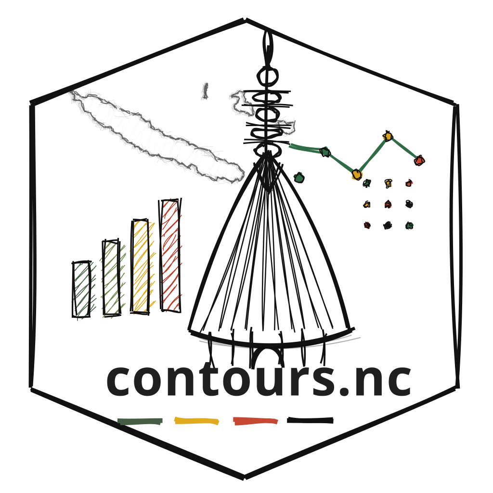

Vous travaillez sur la Nouvelle-Calédonie ou le Pacifique ?
contours.nc est ouvert aux contributions extérieures.

contours.nc est ouvert aux contributions extérieures.
Premiers résultats ou analyse exploratoire.
Explorer un territoire ou un phénomène.
Analyser une question contemporaine.
Partager un jeu, un indicateur ou un outil.
Faire circuler un résultat au-delà de son cadre initial.
Il n’est pas nécessaire d’avoir déjà rédigé un article complet.
Quelques lignes suffisent pour commencer.
contours.nc/contribuer/